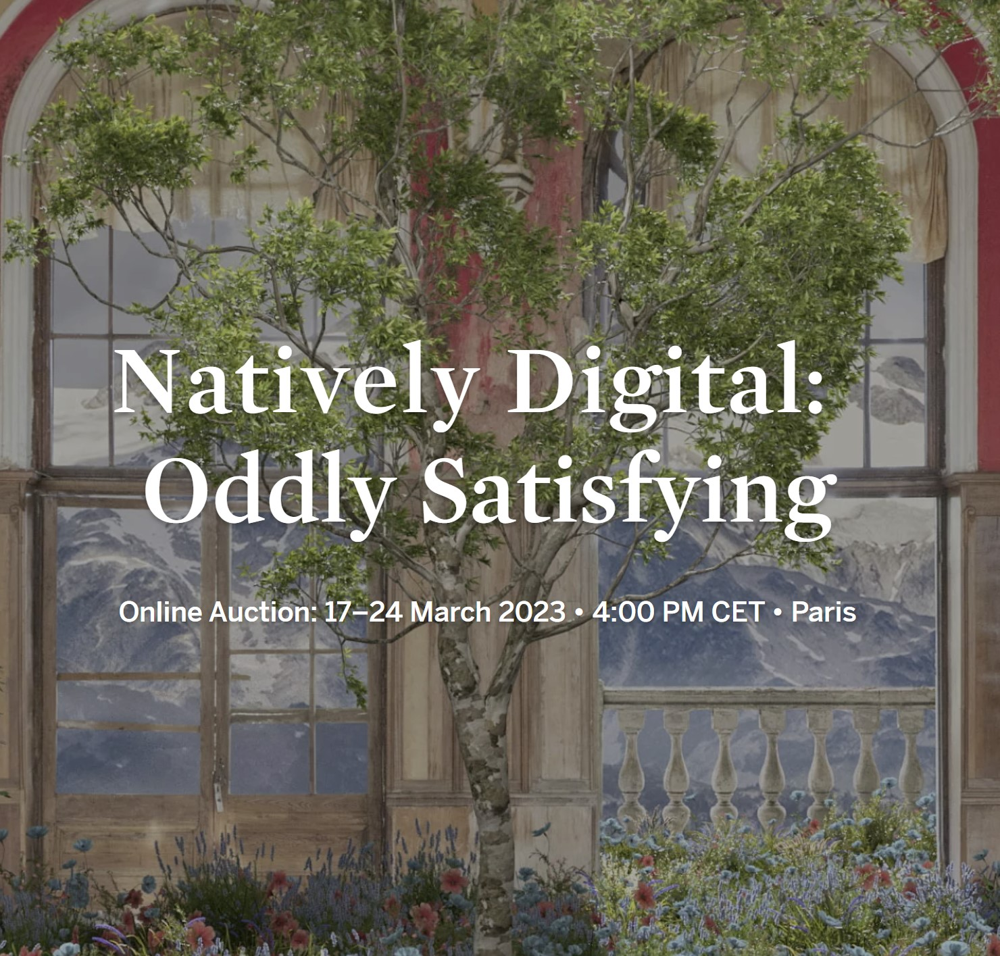
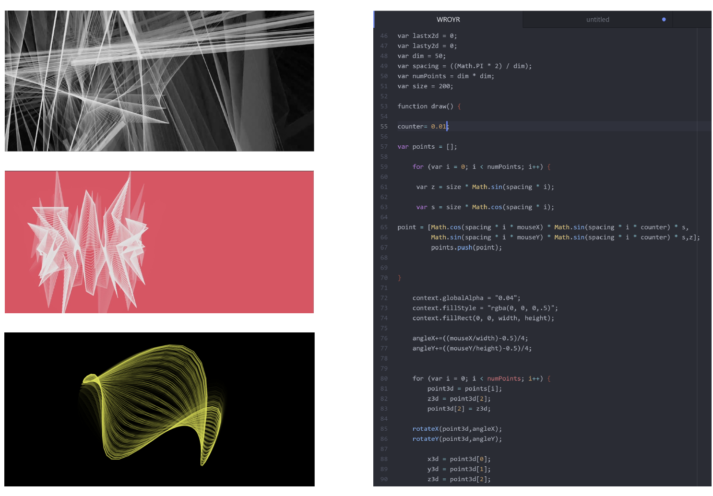
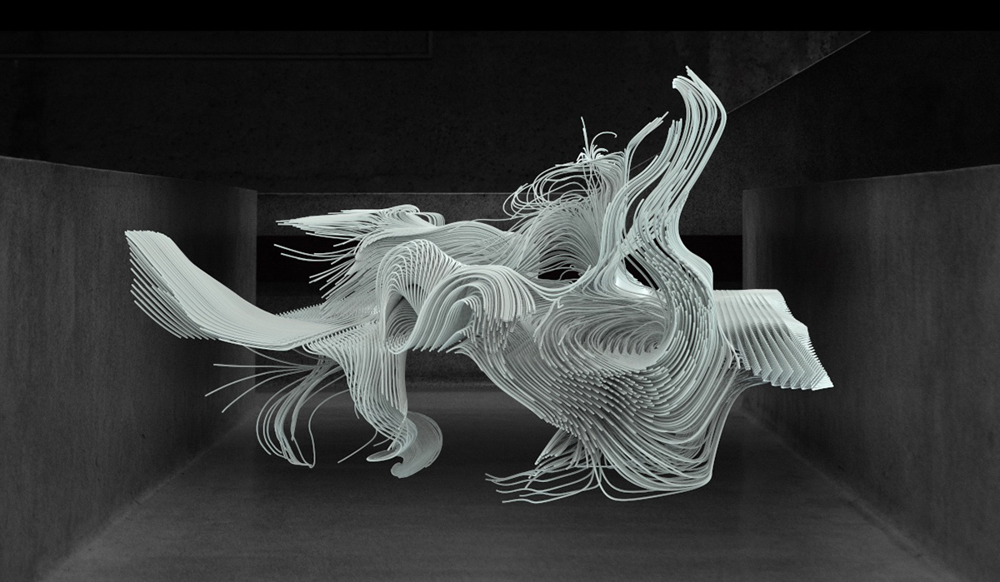
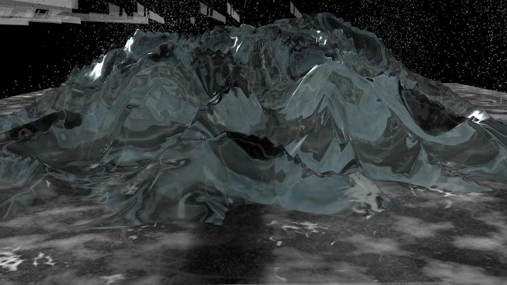

Hi! I am an undergraduate student at UCL studying BASc: Bachelor of Arts and Sciences. I'm a creative technologist into wellness and a certified 200h Yoga Teacher. Here are my projects:
Won 1st prize in the Tezos category @ ETHLondo Hackathon
Built a social network where users can chat with AI chatbots (e.g. Serena Williams) and can buy XR NFTs.

Product Design @ MosaiQ Labs
Created components and start-to finish user flows of new features in Figma and implemented front-end knowledge to design system for deployment in React

Art Show @ W1 Curates.
Featured my art at Volume I of Last Night Collective and helped organise the event by communicating with the office manager and the local technical team. Lead the creative curation and helped future artists prepare for showcasing their art on the screens. 70+ people attended.

Arduino Temperature Illustration
Created an end-to-end connected system to serve a IoT art device using the Arduino MKR WiFi 1010 board and the Arduino Cloud. Coded in C++.

Breathworld App
I created the whole user interface and user journey of the app and and have participated at
user research, impact analysis and competition research. The app prototype was pitched at Initiator VC and it is currently in the proccess of
developing a fully functional iOS app.

Air Pollution and Happiness: a geopolitical issue?
This enquiry will explore the relationship between different indicators of air pollution (PM2.5 & PM10 levels) and happiness (using scored ‘happy means' data), across the years 2011-2021. The spatial variation of the relationship between pollution and happiness will be visualised geospatially, using QGIS. The data collection, cleaning, translation and visualisation were done as a team.

Game Theory Model: Sotheby’s Natively Digital: Oddly Satisfying
Modeling an online art auction through the lens of Game Theory and using the online auction as a case study. This theoretical model calculates the best responding bid (b∗i ), given the bidder’s valuation (vi).
360 Sound Production
Listen with headphones.

Personal Website
This website has been updated many many times and here is where I keep my progress.

Augmented Reality Artwork
A piece developed from a self portrait exploring the upside-down feeling of finding home in unfamiliar
spaces. Inspired by Francesca Woodman's experimental personality, I took my
photography further by using Augmented Reality and 3D models of personal items for a self-portrait.

Cinema4D Artwork
Installation made in univeristy accommodation during the pandemic. I used LiDAR technology to create
cloud-point-based objects of people I spent 6 weeks in quarantine with and then projected them on
mirrored surfaces. My whole room in student accommodation turned into a light installation by night. The
trailer for
the
installation features a song produced by me.

JavaScript Interaction
An interactive user interface using the mouse as a control for speed, rotation and colour. This was
part
of
a course offered by UAL
Creative Computing Institute on Machine Learning and JavaScript visualisations. I
then overlayed it with music and video montage of another room I was quarantining in.

3D Collage
An exploration of public spaces and the making of intrusive shapes into playful ones. Materials and
textures
extracted from
a walk down Oxford Street and compressed in a 3D collage, inspired by Craig Green’s use of polarized
light and iridescent materials in his A/W 2019
campaign.

Software Engineering Internship @ InvestIn
Learnt from Google Engineers about machine learning models and AI implementations for decision-making.
Architectural Modelling
A piece modelled in Houdini from a workshop with artist
Refik Anadol and Zeynep Topal.
Developed with Houdini as a generator of
artificial
spiderwebs and shape-shifting structures.

Natural Materials 3d Artwork
I am questioning identity through the current information architecture of data. By also looking at Rem Koolhaas’s theory ofJunk Space I explored
globalisation and with our shrinking world in mind, I discovered ways of looking at our localised
identity
through systems of data.
